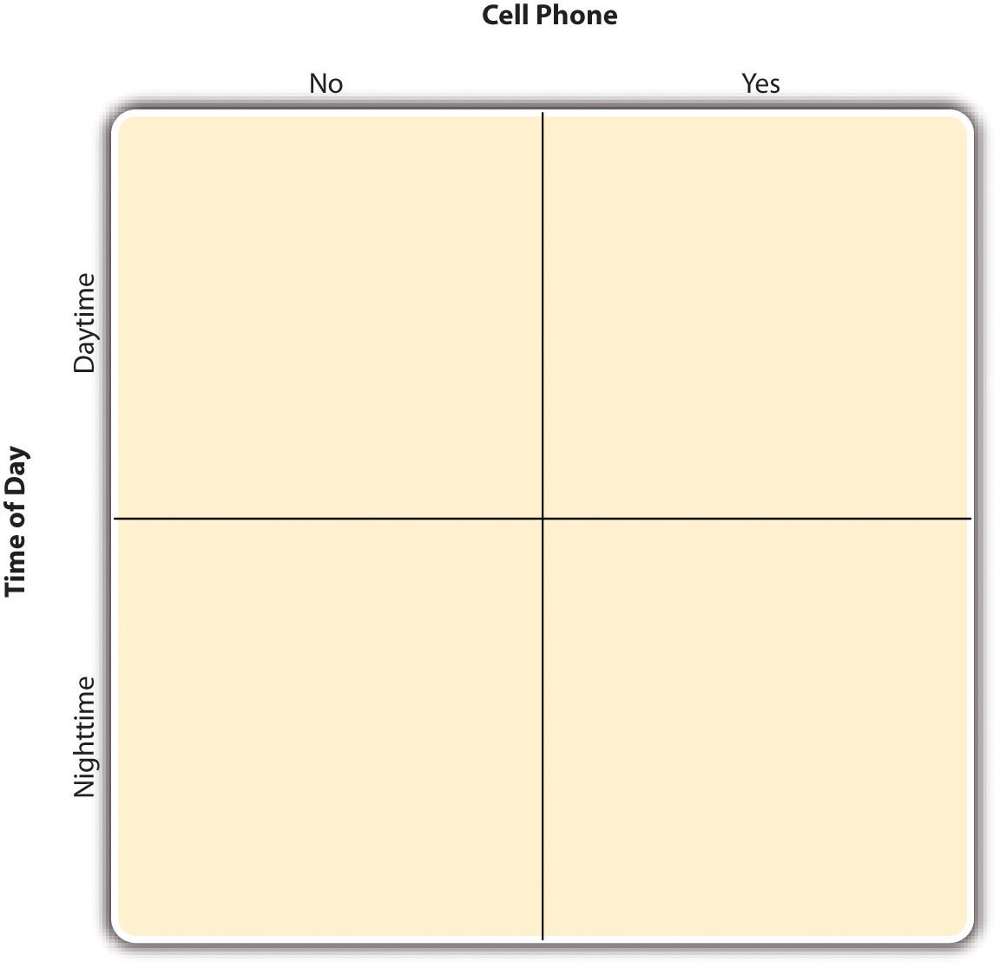
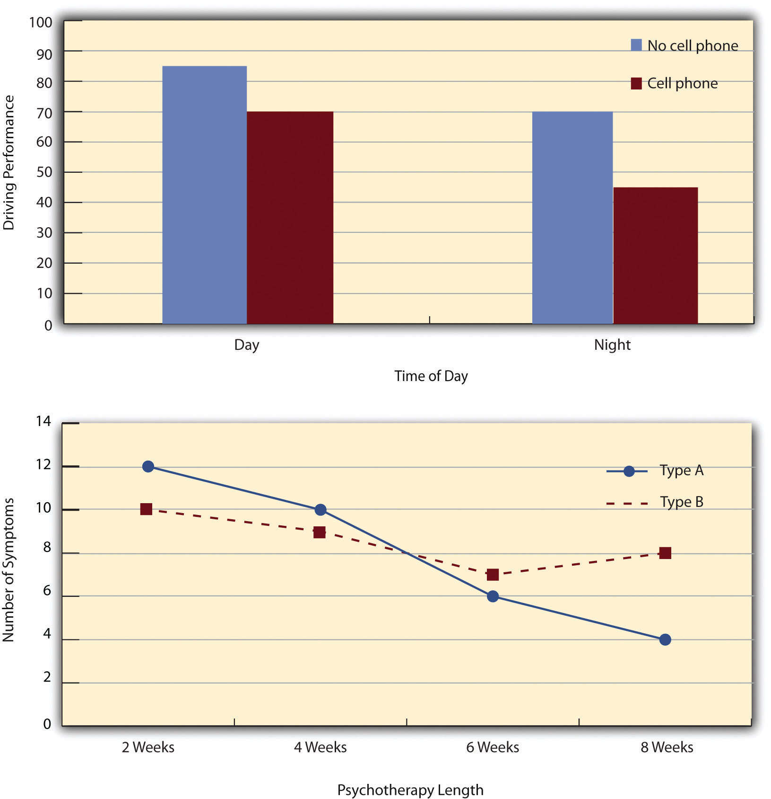
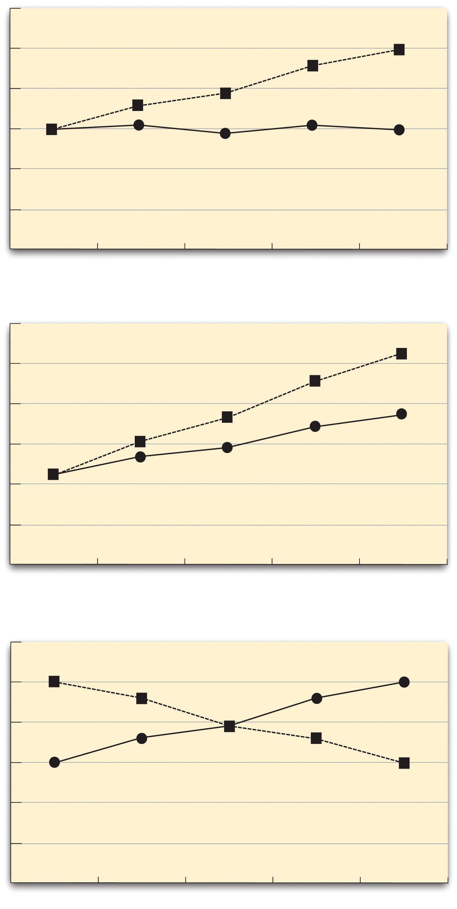

Researcher Simone Schnall and her colleagues were interested in whether feeling physically disgusted causes people to make harsher moral judgments (Schnall, Haidt, Clore, & Jordan, 2008).Schnall, S., Haidt, J., Clore, G. L., & Jordan, A. H. (2008). Disgust as embodied moral judgment. Personality and Social Psychology Bulletin, 34, 1096–1109. They conducted an experiment in which they manipulated participants’ feelings of disgust by testing them in either a clean room or a messy room that contained dirty dishes, an overflowing wastebasket, and a chewed-up pen. They also used a self-report questionnaire to measure the amount of attention that people pay to their own bodily sensations. They called this “private body consciousness.” They measured their primary dependent variable, the harshness of people’s moral judgments, by describing different behaviors (e.g., eating one’s dead dog, failing to return a found wallet) and having participants rate the moral acceptability of each one on a scale of 1 to 7. They also measured some other dependent variables, including participants’ willingness to eat at a new restaurant. Finally, the researchers asked participants to rate their current level of disgust and other emotions. The primary results of this study were that participants in the messy room were in fact more disgusted and made harsher moral judgments than participants in the clean room—but only if they scored relatively high in private body consciousness.
The research designs we have considered so far have been simple—focusing on a question about one variable or about a statistical relationship between two variables. But in many ways the complex design of the experiment undertaken by Schnall and her colleagues is more typical of research in psychology. Fortunately, we have already covered the basic elements of such designs in previous chapters. In this chapter, we look closely at how and why researchers combine these basic elements into more complex designs. We start with complex experiments—considering first the inclusion of multiple dependent variables and then the inclusion of multiple independent variables. Finally, we look at complex correlational designs.
Imagine that you have made the effort to find a research topic, review the research literature, formulate a question, design an experiment, obtain institutional review board (IRB) approval, recruit research participants, and manipulate an independent variable. It would seem almost wasteful to measure a single dependent variable. Even if you are primarily interested in the relationship between an independent variable and one primary dependent variable, there are usually several more questions that you can answer easily by including multiple dependent variablesMore than one dependent variable in the same study. They can be measures of different variables, including a manipulation check, or different measures of the same construct..
Often a researcher wants to know how an independent variable affects several distinct dependent variables. For example, Schnall and her colleagues were interested in how feeling disgusted affects the harshness of people’s moral judgments, but they were also curious about how disgust affects other variables, such as people’s willingness to eat in a restaurant. As another example, researcher Susan Knasko was interested in how different odors affect people’s behavior (Knasko, 1992).Knasko, S. C. (1992). Ambient odor’s effect on creativity, mood, and perceived health. Chemical Senses, 17, 27–35. She conducted an experiment in which the independent variable was whether participants were tested in a room with no odor or in one scented with lemon, lavender, or dimethyl sulfide (which has a cabbagelike smell). Although she was primarily interested in how the odors affected people’s creativity, she was also curious about how they affected people’s moods and perceived health—and it was a simple enough matter to measure these dependent variables too. Although she found that creativity was unaffected by the ambient odor, she found that people’s moods were lower in the dimethyl sulfide condition, and that their perceived health was greater in the lemon condition.
When an experiment includes multiple dependent variables, there is again a possibility of carryover effects. For example, it is possible that measuring participants’ moods before measuring their perceived health could affect their perceived health or that measuring their perceived health before their moods could affect their moods. So the order in which multiple dependent variables are measured becomes an issue. One approach is to measure them in the same order for all participants—usually with the most important one first so that it cannot be affected by measuring the others. Another approach is to counterbalance, or systematically vary, the order in which the dependent variables are measured.
When the independent variable is a construct that can only be manipulated indirectly—such as emotions and other internal states—an additional measure of that independent variable is often included as a manipulation checkA measure of a manipulated independent variable—usually done at the end of the procedure—to confirm that the independent variable was successfully manipulated.. This is done to confirm that the independent variable was, in fact, successfully manipulated. For example, Schnall and her colleagues had their participants rate their level of disgust to be sure that those in the messy room actually felt more disgusted than those in the clean room. Manipulation checks are usually done at the end of the procedure to be sure that the effect of the manipulation lasted throughout the entire procedure and to avoid calling unnecessary attention to the manipulation.
Manipulation checks become especially important when the manipulation of the independent variable turns out to have no effect on the dependent variable. Imagine, for example, that you exposed participants to happy or sad movie music—intending to put them in happy or sad moods—but you found that this had no effect on the number of happy or sad childhood events they recalled. This could be because being in a happy or sad mood has no effect on memories for childhood events. But it could also be that the music was ineffective at putting participants in happy or sad moods. A manipulation check—in this case, a measure of participants’ moods—would help resolve this uncertainty. If it showed that you had successfully manipulated participants’ moods, then it would appear that there is indeed no effect of mood on memory for childhood events. But if it showed that you did not successfully manipulate participants’ moods, then it would appear that you need a more effective manipulation to answer your research question.
Another common approach to including multiple dependent variables is to operationally define and measure the same construct, or closely related ones, in different ways. Imagine, for example, that a researcher conducts an experiment on the effect of daily exercise on stress. The dependent variable, stress, is a construct that can be operationally defined in different ways. For this reason, the researcher might have participants complete the paper-and-pencil Perceived Stress Scale and measure their levels of the stress hormone cortisol. This is an example of the use of converging operations. If the researcher finds that the different measures are affected by exercise in the same way, then he or she can be confident in the conclusion that exercise affects the more general construct of stress.
When multiple dependent variables are different measures of the same construct—especially if they are measured on the same scale—researchers have the option of combining them into a single measure of that construct. Recall that Schnall and her colleagues were interested in the harshness of people’s moral judgments. To measure this construct, they presented their participants with seven different scenarios describing morally questionable behaviors and asked them to rate the moral acceptability of each one. Although they could have treated each of the seven ratings as a separate dependent variable, these researchers combined them into a single dependent variable by computing their mean.
When researchers combine dependent variables in this way, they are treating them collectively as a multiple-response measure of a single construct. The advantage of this is that multiple-response measures are generally more reliable than single-response measures. However, it is important to make sure the individual dependent variables are correlated with each other by computing an internal consistency measure such as Cronbach’s α. If they are not correlated with each other, then it does not make sense to combine them into a measure of a single construct. If they have poor internal consistency, then they should be treated as separate dependent variables.
Just as it is common for studies in psychology to include multiple dependent variables, it is also common for them to include multiple independent variables. Schnall and her colleagues studied the effect of both disgust and private body consciousness in the same study. Researchers’ inclusion of multiple independent variables in one experiment is further illustrated by the following actual titles from various professional journals:
Just as including multiple dependent variables in the same experiment allows one to answer more research questions, so too does including multiple independent variables in the same experiment. For example, instead of conducting one study on the effect of disgust on moral judgment and another on the effect of private body consciousness on moral judgment, Schnall and colleagues were able to conduct one study that addressed both questions. But including multiple independent variables also allows the researcher to answer questions about whether the effect of one independent variable depends on the level of another. This is referred to as an interaction between the independent variables. Schnall and her colleagues, for example, observed an interaction between disgust and private body consciousness because the effect of disgust depended on whether participants were high or low in private body consciousness. As we will see, interactions are often among the most interesting results in psychological research.
By far the most common approach to including multiple independent variables in an experiment is the factorial design. In a factorial designA research design with multiple independent variables in which each level of one independent variable is combined with each level of the others to produce all possible conditions., each level of one independent variable (which can also be called a factorAn independent variable in a factorial design. Also in factor analysis, one of the underlying constructs that is assumed to account for correlations among multiple variables.) is combined with each level of the others to produce all possible combinations. Each combination, then, becomes a condition in the experiment. Imagine, for example, an experiment on the effect of cell phone use (yes vs. no) and time of day (day vs. night) on driving ability. This is shown in the factorial design tableA table used to represent a factorial design. The rows represent the levels of one independent variable, the columns represent the levels of a second independent variable, and each cell represents a condition. in Figure 8.2 "Factorial Design Table Representing a 2 × 2 Factorial Design". The columns of the table represent cell phone use, and the rows represent time of day. The four cells of the table represent the four possible combinations or conditions: using a cell phone during the day, not using a cell phone during the day, using a cell phone at night, and not using a cell phone at night. This particular design is a 2 × 2 (read “two-by-two”) factorial design because it combines two variables, each of which has two levels. If one of the independent variables had a third level (e.g., using a handheld cell phone, using a hands-free cell phone, and not using a cell phone), then it would be a 3 × 2 factorial design, and there would be six distinct conditions. Notice that the number of possible conditions is the product of the numbers of levels. A 2 × 2 factorial design has four conditions, a 3 × 2 factorial design has six conditions, a 4 × 5 factorial design would have 20 conditions, and so on.
Figure 8.2 Factorial Design Table Representing a 2 × 2 Factorial Design
In principle, factorial designs can include any number of independent variables with any number of levels. For example, an experiment could include the type of psychotherapy (cognitive vs. behavioral), the length of the psychotherapy (2 weeks vs. 2 months), and the sex of the psychotherapist (female vs. male). This would be a 2 × 2 × 2 factorial design and would have eight conditions. Figure 8.3 "Factorial Design Table Representing a 2 × 2 × 2 Factorial Design" shows one way to represent this design. In practice, it is unusual for there to be more than three independent variables with more than two or three levels each because the number of conditions can quickly become unmanageable. For example, adding a fourth independent variable with three levels (e.g., therapist experience: low vs. medium vs. high) to the current example would make it a 2 × 2 × 2 × 3 factorial design with 24 distinct conditions. In the rest of this section, we will focus on designs with two independent variables. The general principles discussed here extend in a straightforward way to more complex factorial designs.
Figure 8.3 Factorial Design Table Representing a 2 × 2 × 2 Factorial Design

Recall that in a simple between-subjects design, each participant is tested in only one condition. In a simple within-subjects design, each participant is tested in all conditions. In a factorial experiment, the decision to take the between-subjects or within-subjects approach must be made separately for each independent variable. In a between-subjects factorial designA factorial design in which each independent variable is manipulated between subjects so that each participant is tested in only one condition., all of the independent variables are manipulated between subjects. For example, all participants could be tested either while using a cell phone or while not using a cell phone and either during the day or during the night. This would mean that each participant was tested in one and only one condition. In a within-subjects factorial designA factorial design in which each independent variable is manipulated within subjects so that each participant is tested in all conditions., all of the independent variables are manipulated within subjects. All participants could be tested both while using a cell phone and while not using a cell phone and both during the day and during the night. This would mean that each participant was tested in all conditions. The advantages and disadvantages of these two approaches are the same as those discussed in Chapter 6 "Experimental Research". The between-subjects design is conceptually simpler, avoids carryover effects, and minimizes the time and effort of each participant. The within-subjects design is more efficient for the researcher and controls extraneous participant variables.
It is also possible to manipulate one independent variable between subjects and another within subjects. This is called a mixed factorial designA factorial design in which at least one independent variable is manipulated between subjects and at least one is manipulated within subjects.. For example, a researcher might choose to treat cell phone use as a within-subjects factor by testing the same participants both while using a cell phone and while not using a cell phone (while counterbalancing the order of these two conditions). But he or she might choose to treat time of day as a between-subjects factor by testing each participant either during the day or during the night (perhaps because this only requires them to come in for testing once). Thus each participant in this mixed design would be tested in two of the four conditions.
Regardless of whether the design is between subjects, within subjects, or mixed, the actual assignment of participants to conditions or orders of conditions is typically done randomly.
In many factorial designs, one of the independent variables is a nonmanipulated independent variableIn a factorial design, a variable (usually a participant variable) that is treated as an independent variable but is not actually manipulated by the researcher.. The researcher measures it but does not manipulate it. The study by Schnall and colleagues is a good example. One independent variable was disgust, which the researchers manipulated by testing participants in a clean room or a messy room. The other was private body consciousness, which the researchers simply measured. Another example is a study by Halle Brown and colleagues in which participants were exposed to several words that they were later asked to recall (Brown, Kosslyn, Delamater, Fama, & Barsky, 1999).Brown, H. D., Kosslyn, S. M., Delamater, B., Fama, A., & Barsky, A. J. (1999). Perceptual and memory biases for health-related information in hypochondriacal individuals. Journal of Psychosomatic Research, 47, 67–78. The manipulated independent variable was the type of word. Some were negative health-related words (e.g., tumor, coronary), and others were not health related (e.g., election, geometry). The nonmanipulated independent variable was whether participants were high or low in hypochondriasis (excessive concern with ordinary bodily symptoms). The result of this study was that the participants high in hypochondriasis were better than those low in hypochondriasis at recalling the health-related words, but they were no better at recalling the non-health-related words.
Such studies are extremely common, and there are several points worth making about them. First, nonmanipulated independent variables are usually participant variables (private body consciousness, hypochondriasis, self-esteem, and so on), and as such they are by definition between-subjects factors. For example, people are either low in hypochondriasis or high in hypochondriasis; they cannot be tested in both of these conditions. Second, such studies are generally considered to be experiments as long as at least one independent variable is manipulated, regardless of how many nonmanipulated independent variables are included. Third, it is important to remember that causal conclusions can only be drawn about the manipulated independent variable. For example, Schnall and her colleagues were justified in concluding that disgust affected the harshness of their participants’ moral judgments because they manipulated that variable and randomly assigned participants to the clean or messy room. But they would not have been justified in concluding that participants’ private body consciousness affected the harshness of their participants’ moral judgments because they did not manipulate that variable. It could be, for example, that having a strict moral code and a heightened awareness of one’s body are both caused by some third variable (e.g., neuroticism). Thus it is important to be aware of which variables in a study are manipulated and which are not.
The results of factorial experiments with two independent variables can be graphed by representing one independent variable on the x-axis and representing the other by using different kinds of bars or lines. (The y-axis is always reserved for the dependent variable.) Figure 8.4 "Two Ways to Plot the Results of a Factorial Experiment With Two Independent Variables" shows results for two hypothetical factorial experiments. The top panel shows the results of a 2 × 2 design. Time of day (day vs. night) is represented by different locations on the x-axis, and cell phone use (no vs. yes) is represented by different-colored bars. (It would also be possible to represent cell phone use on the x-axis and time of day as different-colored bars. The choice comes down to which way seems to communicate the results most clearly.) The bottom panel of Figure 8.4 "Two Ways to Plot the Results of a Factorial Experiment With Two Independent Variables" shows the results of a 4 × 2 design in which one of the variables is quantitative. This variable, psychotherapy length, is represented along the x-axis, and the other variable (psychotherapy type) is represented by differently formatted lines. This is a line graph rather than a bar graph because the variable on the x-axis is quantitative with a small number of distinct levels.
Figure 8.4 Two Ways to Plot the Results of a Factorial Experiment With Two Independent Variables
In factorial designs, there are two kinds of results that are of interest: main effects and interaction effects (which are also called just “interactions”). A main effectIn a factorial design, the effect of one independent variable averaged across levels of all other independent variables. is the statistical relationship between one independent variable and a dependent variable—averaging across the levels of the other independent variable. Thus there is one main effect to consider for each independent variable in the study. The top panel of Figure 8.4 "Two Ways to Plot the Results of a Factorial Experiment With Two Independent Variables" shows a main effect of cell phone use because driving performance was better, on average, when participants were not using cell phones than when they were. The blue bars are, on average, higher than the red bars. It also shows a main effect of time of day because driving performance was better during the day than during the night—both when participants were using cell phones and when they were not. Main effects are independent of each other in the sense that whether or not there is a main effect of one independent variable says nothing about whether or not there is a main effect of the other. The bottom panel of Figure 8.4 "Two Ways to Plot the Results of a Factorial Experiment With Two Independent Variables", for example, shows a clear main effect of psychotherapy length. The longer the psychotherapy, the better it worked. But it also shows no overall advantage of one type of psychotherapy over the other.
There is an interactionIn a factorial design, when the effect of one independent variable depends on the level of another independent variable. effect (or just “interaction”) when the effect of one independent variable depends on the level of another. Although this might seem complicated, you have an intuitive understanding of interactions already. It probably would not surprise you, for example, to hear that the effect of receiving psychotherapy is stronger among people who are highly motivated to change than among people who are not motivated to change. This is an interaction because the effect of one independent variable (whether or not one receives psychotherapy) depends on the level of another (motivation to change). Schnall and her colleagues also demonstrated an interaction because the effect of whether the room was clean or messy on participants’ moral judgments depended on whether the participants were low or high in private body consciousness. If they were high in private body consciousness, then those in the messy room made harsher judgments. If they were low in private body consciousness, then whether the room was clean or messy did not matter.
The effect of one independent variable can depend on the level of the other in different ways. This is shown in Figure 8.5 "Bar Graphs Showing Three Types of Interactions". In the top panel, one independent variable has an effect at one level of the second independent variable but no effect at the others. (This is much like the study of Schnall and her colleagues where there was an effect of disgust for those high in private body consciousness but not for those low in private body consciousness.) In the middle panel, one independent variable has a stronger effect at one level of the second independent variable than at the other level. This is like the hypothetical driving example where there was a stronger effect of using a cell phone at night than during the day. In the bottom panel, one independent variable again has an effect at both levels of the second independent variable, but the effects are in opposite directions. Figure 8.5 "Bar Graphs Showing Three Types of Interactions" shows the strongest form of this kind of interaction, called a crossover interactionAn interaction in which one independent variable has opposite effects at different levels of another independent variable.. One example of a crossover interaction comes from a study by Kathy Gilliland on the effect of caffeine on the verbal test scores of introverts and extroverts (Gilliland, 1980).Gilliland, K. (1980). The interactive effect of introversion-extroversion with caffeine induced arousal on verbal performance. Journal of Research in Personality, 14, 482–492. Introverts perform better than extroverts when they have not ingested any caffeine. But extroverts perform better than introverts when they have ingested 4 mg of caffeine per kilogram of body weight. Figure 8.6 "Line Graphs Showing Three Types of Interactions" shows examples of these same kinds of interactions when one of the independent variables is quantitative and the results are plotted in a line graph. Note that in a crossover interaction, the two lines literally “cross over” each other.
Figure 8.5 Bar Graphs Showing Three Types of Interactions

In the top panel, one independent variable has an effect at one level of the second independent variable but not at the other. In the middle panel, one independent variable has a stronger effect at one level of the second independent variable than at the other. In the bottom panel, one independent variable has the opposite effect at one level of the second independent variable than at the other.
Figure 8.6 Line Graphs Showing Three Types of Interactions
In the top panel, one independent variable has an effect at one level of the second independent variable but not at the other. In the middle panel, one independent variable has a stronger effect at one level of the second independent variable than at the other. In the bottom panel, one independent variable has the opposite effect at one level of the second independent variable than at the other.
In many studies, the primary research question is about an interaction. The study by Brown and her colleagues was inspired by the idea that people with hypochondriasis are especially attentive to any negative health-related information. This led to the hypothesis that people high in hypochondriasis would recall negative health-related words more accurately than people low in hypochondriasis but recall non-health-related words about the same as people low in hypochondriasis. And of course this is exactly what happened in this study.
As we have already seen, researchers conduct correlational studies rather than experiments when they are interested in noncausal relationships or when they are interested in causal relationships where the independent variable cannot be manipulated for practical or ethical reasons. In this section, we look at some approaches to complex correlational research that involve measuring several variables and assessing the relationships among them.
We have already seen that factorial experiments can include manipulated independent variables or a combination of manipulated and nonmanipulated independent variables. But factorial designs can also include only nonmanipulated independent variables, in which case they are no longer experiments but correlational studies. Consider a hypothetical study in which a researcher measures both the moods and the self-esteem of several participants—categorizing them as having either a positive or negative mood and as being either high or low in self-esteem—along with their willingness to have unprotected sexual intercourse. This can be conceptualized as a 2 × 2 factorial design with mood (positive vs. negative) and self-esteem (high vs. low) as between-subjects factors. (Willingness to have unprotected sex is the dependent variable.) This design can be represented in a factorial design table and the results in a bar graph of the sort we have already seen. The researcher would consider the main effect of sex, the main effect of self-esteem, and the interaction between these two independent variables.
Again, because neither independent variable in this example was manipulated, it is a correlational study rather than an experiment. (The similar study by MacDonald and Martineau [2002]MacDonald, T. K., & Martineau, A. M. (2002). Self-esteem, mood, and intentions to use condoms: When does low self-esteem lead to risky health behaviors? Journal of Experimental Social Psychology, 38, 299–306. was an experiment because they manipulated their participants’ moods.) This is important because, as always, one must be cautious about inferring causality from correlational studies because of the directionality and third-variable problems. For example, a main effect of participants’ moods on their willingness to have unprotected sex might be caused by any other variable that happens to be correlated with their moods.
Most complex correlational research, however, does not fit neatly into a factorial design. Instead, it involves measuring several variables—often both categorical and quantitative—and then assessing the statistical relationships among them. For example, researchers Nathan Radcliffe and William Klein studied a sample of middle-aged adults to see how their level of optimism (measured by using a short questionnaire called the Life Orientation Test) relates to several other variables related to having a heart attack (Radcliffe & Klein, 2002).Radcliffe, N. M., & Klein, W. M. P. (2002). Dispositional, unrealistic, and comparative optimism: Differential relations with knowledge and processing of risk information and beliefs about personal risk. Personality and Social Psychology Bulletin, 28, 836–846. These included their health, their knowledge of heart attack risk factors, and their beliefs about their own risk of having a heart attack. They found that more optimistic participants were healthier (e.g., they exercised more and had lower blood pressure), knew about heart attack risk factors, and correctly believed their own risk to be lower than that of their peers.
This approach is often used to assess the validity of new psychological measures. For example, when John Cacioppo and Richard Petty created their Need for Cognition Scale—a measure of the extent to which people like to think and value thinking—they used it to measure the need for cognition for a large sample of college students, along with three other variables: intelligence, socially desirable responding (the tendency to give what one thinks is the “appropriate” response), and dogmatism (Caccioppo & Petty, 1982).Cacioppo, J. T., & Petty, R. E. (1982). The need for cognition. Journal of Personality and Social Psychology, 42, 116–131. The results of this study are summarized in Table 8.1 "Correlation Matrix Showing Correlations Among the Need for Cognition and Three Other Variables Based on Research by Cacioppo and Petty", which is a correlation matrixA table that shows the correlations among several variables. showing the correlation (Pearson’s r) between every possible pair of variables in the study. For example, the correlation between the need for cognition and intelligence was +.39, the correlation between intelligence and socially desirable responding was −.02, and so on. (Only half the matrix is filled in because the other half would contain exactly the same information. Also, because the correlation between a variable and itself is always +1.00, these values are replaced with dashes throughout the matrix.) In this case, the overall pattern of correlations was consistent with the researchers’ ideas about how scores on the need for cognition should be related to these other constructs.
Table 8.1 Correlation Matrix Showing Correlations Among the Need for Cognition and Three Other Variables Based on Research by Cacioppo and Petty
| Need for cognition | Intelligence | Social desirability | Dogmatism | |
|---|---|---|---|---|
| Need for cognition | — | |||
| Intelligence | +.39 | — | ||
| Social desirability | +.08 | +.02 | — | |
| Dogmatism | −.27 | −.23 | +.03 | — |
When researchers study relationships among a large number of conceptually similar variables, they often use a complex statistical technique called factor analysisA complex statistical technique that organizes several variables into clusters where there are strong correlations among the variables within a cluster but weak correlations among the variables between clusters. Each cluster is interpreted as representing a different underlying variable or factor.. In essence, factor analysis organizes the variables into a smaller number of clusters, such that they are strongly correlated within each cluster but weakly correlated between clusters. Each cluster is then interpreted as multiple measures of the same underlying construct. These underlying constructs are also called “factors.” For example, when people perform a wide variety of mental tasks, factor analysis typically organizes them into two main factors—one that researchers interpret as mathematical intelligence (arithmetic, quantitative estimation, spatial reasoning, and so on) and another that they interpret as verbal intelligence (grammar, reading comprehension, vocabulary, and so on). The Big Five personality factors have been identified through factor analyses of people’s scores on a large number of more specific traits. For example, measures of warmth, gregariousness, activity level, and positive emotions tend to be highly correlated with each other and are interpreted as representing the construct of extroversion. As a final example, researchers Peter Rentfrow and Samuel Gosling asked more than 1,700 college students to rate how much they liked 14 different popular genres of music (Rentfrow & Gosling, 2008).Rentfrow, P. J., & Gosling, S. D. (2008). The do re mi’s of everyday life: The structure and personality correlates of music preferences. Journal of Personality and Social Psychology, 84, 1236–1256. They then submitted these 14 variables to a factor analysis, which identified four distinct factors. The researchers called them Reflective and Complex (blues, jazz, classical, and folk), Intense and Rebellious (rock, alternative, and heavy metal), Upbeat and Conventional (country, soundtrack, religious, pop), and Energetic and Rhythmic (rap/hip-hop, soul/funk, and electronica).
Two additional points about factor analysis are worth making here. One is that factors are not categories. Factor analysis does not tell us that people are either extroverted or conscientious or that they like either “reflective and complex” music or “intense and rebellious” music. Instead, factors are constructs that operate independently of each other. So people who are high in extroversion might be high or low in conscientiousness, and people who like reflective and complex music might or might not also like intense and rebellious music. The second point is that factor analysis reveals only the underlying structure of the variables. It is up to researchers to interpret and label the factors and to explain the origin of that particular factor structure. For example, one reason that extroversion and the other Big Five operate as separate factors is that they appear to be controlled by different genes (Plomin, DeFries, McClean, & McGuffin, 2008).Plomin, R., DeFries, J. C., McClearn, G. E., & McGuffin, P. (2008). Behavioral genetics (5th ed.). New York, NY: Worth.
Another important use of complex correlational research is to explore possible causal relationships among variables. This might seem surprising given that “correlation does not imply causation.” It is true that correlational research cannot unambiguously establish that one variable causes another. Complex correlational research, however, can often be used to rule out other plausible interpretations.
The primary way of doing this is through the statistical controlIn complex correlational research, accounting for third variables by measuring them and including them in the analysis. of potential third variables. Instead of controlling these variables by random assignment or by holding them constant as in an experiment, the researcher measures them and includes them in the statistical analysis. Consider some research by Paul Piff and his colleagues, who hypothesized that being lower in socioeconomic status (SES) causes people to be more generous (Piff, Kraus, Côté, Hayden Cheng, & Keltner, 2011).Piff, P. K., Kraus, M. W., Côté, S., Hayden Cheng, B., & Keltner, D. (2011). Having less, giving more: The influence of social class on prosocial behavior. Journal of Personality and Social Psychology, 99, 771–784. They measured their participants’ SES and had them play the “dictator game.” They told participants that each would be paired with another participant in a different room. (In reality, there was no other participant.) Then they gave each participant 10 points (which could later be converted to money) to split with the “partner” in whatever way he or she decided. Because the participants were the “dictators,” they could even keep all 10 points for themselves if they wanted to.
As these researchers expected, participants who were lower in SES tended to give away more of their points than participants who were higher in SES. This is consistent with the idea that being lower in SES causes people to be more generous. But there are also plausible third variables that could explain this relationship. It could be, for example, that people who are lower in SES tend to be more religious and that it is their greater religiosity that causes them to be more generous. Or it could be that people who are lower in SES tend to come from ethnic groups that emphasize generosity more than other ethnic groups. The researchers dealt with these potential third variables, however, by measuring them and including them in their statistical analyses. They found that neither religiosity nor ethnicity was correlated with generosity and were therefore able to rule them out as third variables. This does not prove that SES causes greater generosity because there could still be other third variables that the researchers did not measure. But by ruling out some of the most plausible third variables, the researchers made a stronger case for SES as the cause of the greater generosity.
Many studies of this type use a statistical technique called multiple regressionA statistical technique that describes the relationship between multiple independent variables and a single dependent variable in terms of an equation that shows the separate contribution of each independent variable to the dependent variable.. This involves measuring several independent variables (X1, X2, X3,…Xi), all of which are possible causes of a single dependent variable (Y). The result of a multiple regression analysis is an equation that expresses the dependent variable as an additive combination of the independent variables. This regression equation has the following general form:
b1X1+ b2X2+ b3X3+ … + biXi= Y.The quantities b1, b2, and so on are regression weights that indicate how large a contribution an independent variable makes, on average, to the dependent variable. Specifically, they indicate how much the dependent variable changes for each one-unit change in the independent variable.
The advantage of multiple regression is that it can show whether an independent variable makes a contribution to a dependent variable over and above the contributions made by other independent variables. As a hypothetical example, imagine that a researcher wants to know how the independent variables of income and health relate to the dependent variable of happiness. This is tricky because income and health are themselves related to each other. Thus if people with greater incomes tend to be happier, then perhaps this is only because they tend to be healthier. Likewise, if people who are healthier tend to be happier, perhaps this is only because they tend to make more money. But a multiple regression analysis including both income and happiness as independent variables would show whether each one makes a contribution to happiness when the other is taken into account. (Research like this, by the way, has shown both income and health make extremely small contributions to happiness except in the case of severe poverty or illness; Diener, 2000.Diener, E. (2000). Subjective well-being: The science of happiness, and a proposal for a national index. American Psychologist, 55, 34–43.)
The examples discussed in this section only scratch the surface of how researchers use complex correlational research to explore possible causal relationships among variables. It is important to keep in mind, however, that purely correlational approaches cannot unambiguously establish that one variable causes another. The best they can do is show patterns of relationships that are consistent with some causal interpretations and inconsistent with others.